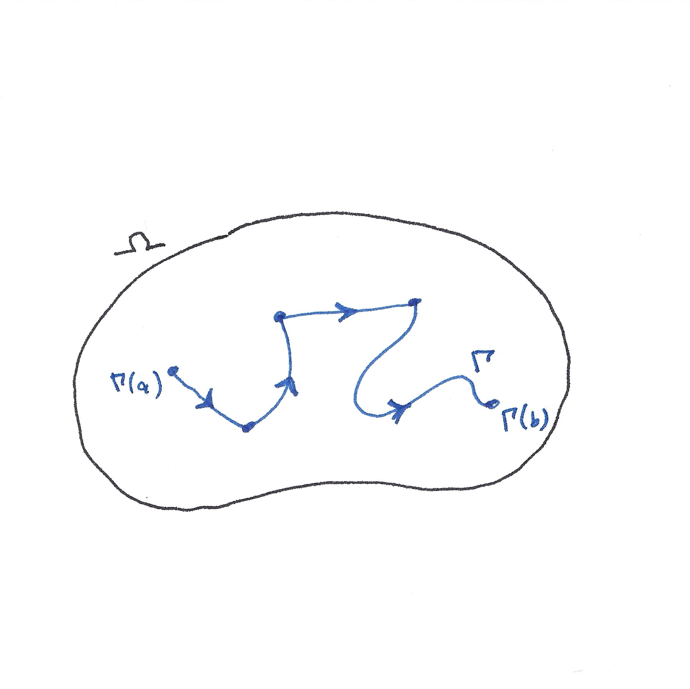
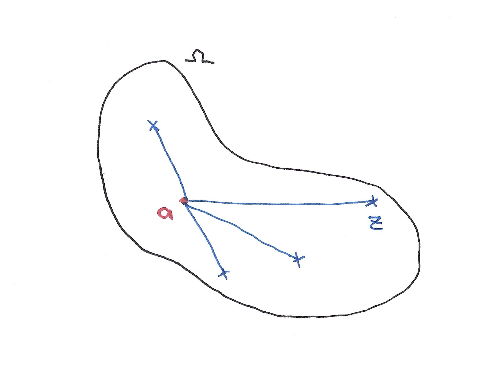
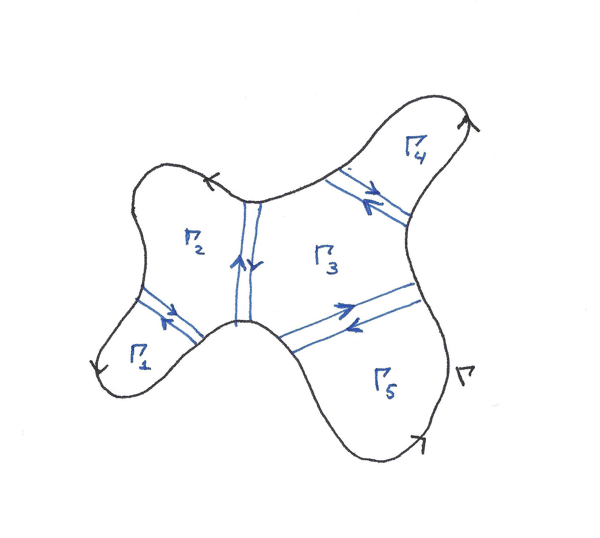
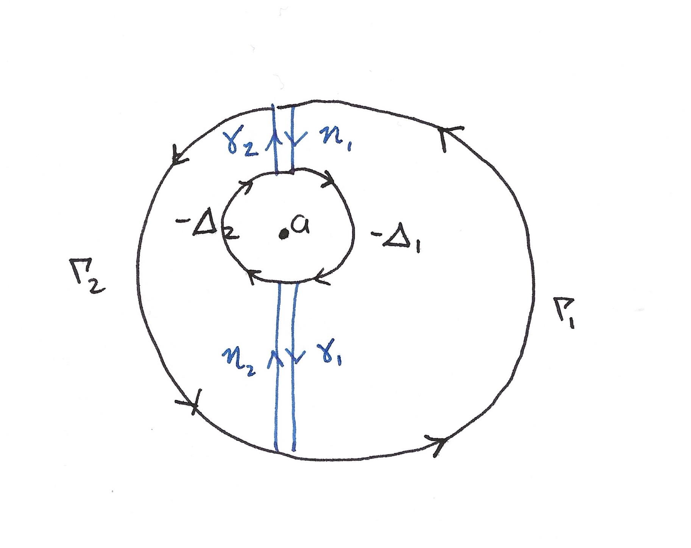

One of the central results in complex analysis is Cauchy's Theorem, and it's also one of the results I found most striking. After years of studying mathematics, I had often encountered elegant theorems, but this one felt surprising and powerful in a different way. When I first came across it, the conclusion seemed almost too perfect. It stood out from many of the theorems I'd studied before, and hence this I feel deserves an article of its own.
Preliminaries
Before stating the theorem, it is useful to establish some of the terminology. There are several versions of Cauchy's Theorem, depending on the assumptions made about the contour and the domain. I will focus on the classical version for a simple closed contour.
A path is a piecewise continuously differentiable function \(\Gamma:[a,b]\to\mathbb{C}\). A contour is a closed path, and is called simple if it does not intersect itself, apart from its matching endpoints.

By the Jordan curve theorem, a simple closed curve separates the complex plane into two connected components: a bounded interior and an unbounded exterior.
We also need the notion of holomorphicity. Let \(U \subseteq \mathbb{C}\) be an open set. A function \(f:U\to\mathbb{C}\) is said to be holomorphic if its complex derivative exists at every point \(z_0\in U\). That is,
\[ f'(z_0)=\lim_{z\to z_0}\frac{f(z)-f(z_0)}{z-z_0}. \]
When we say that a complex function \(f\) is holomorphic on and inside a simple contour \(\Gamma\), we mean that \(f\) is defined and holomorphic on an open set containing both \(\Gamma\) and its interior.
Cauchy's Theorem
We can now state the theorem.
Cauchy's Theorem. Let \(\Gamma\) be a simple, closed, piecewise continuously differentiable contour, and let \(D\) denote its interior. If \(f\) is holomorphic on an open neighbourhood of \(\overline{D}\), then \[ \oint_\Gamma f(z)\,dz=0. \]
It looks rather strange when you first see it. So, if I manage to find a region containing my contour and its interior, on which \(f\) is holomorphic, I can just say that the integral over that contour is zero?
Yes! And perhaps one of the most interesting things about this result is that the shape of the contour does not matter. It could be a circle, a square, or some rather awkward closed curve. As long as the conditions of the theorem are satisfied, the integral vanishes.
Understanding the proof
The proof of Cauchy's Theorem can be approached by first considering a simpler class of regions and then extending the result to more general domains. One useful idea is that of a starlike region.
A region \(D\subseteq\mathbb{C}\) is called starlike if there exists a point \(a\in D\), called a star centre, such that for every \(z\in D\), the line segment joining \(a\) to \(z\) lies entirely within \(D\).
In other words, from the point \(a\), we can draw a straight line to every other point in the region without leaving it. A disk is a simple example of a starlike region.

The starting point is the case of a triangle, known as Goursat's lemma: if \(f\) is holomorphic on an open set containing a closed triangle \(T\), then \(\oint_{\partial T} f(z)\,dz=0\). I will not prove this here, but it is the basic building block.
For a polygonal starlike region, we can join the star centre to its vertices, dividing the region into triangles. Applying Goursat's lemma to each triangle, the integrals along the internal edges cancel because each shared edge is traversed in opposite directions. This leaves only the integral along the original boundary.
For a polygonal starlike region, we can join the star centre to its vertices, dividing the region into triangles. Applying the triangle version of Cauchy's theorem to each triangle, the integrals along the internal edges cancel because each shared edge is traversed in opposite directions. This leaves only the integral along the original boundary.
We can extend this geometric idea to more general regions by subdividing them into smaller pieces using cross-cuts. If we subdivide finely enough, each piece lies inside a disc on which \(f\) is holomorphic, and a disc is starlike. This is possible because the closed region is compact. Cauchy's Theorem can then be applied to the boundary of each piece.

Suppose the resulting contours are \(\Gamma_1,\Gamma_2,\ldots,\Gamma_n\). By Cauchy's Theorem,
\[ \oint_{\Gamma_j}f(z)\,dz=0, \qquad j=1,\ldots,n. \]
Adding these integrals together gives
\[ \begin{aligned} \oint_\Gamma f(z)\,dz &=\oint_{\Gamma_1}f(z)\,dz +\oint_{\Gamma_2}f(z)\,dz +\cdots +\oint_{\Gamma_n}f(z)\,dz\\ &=0. \end{aligned} \]
The reason this works is that the internal boundaries are traversed twice, but in opposite directions. Recall that reversing the orientation of a contour changes the sign of its integral:
\[ \int_{-\gamma}f(z)\,dz=-\int_\gamma f(z)\,dz. \]
Consequently, all the contributions from the internal boundaries cancel, leaving only the integral over the original contour. This is the underlying idea behind the subdivision argument.
This is a geometric outline of the argument rather than a complete proof for every possible domain. A fully rigorous treatment requires justifying the subdivision and the relevant assumptions. Nevertheless, the cancellation of internal boundaries is a useful way to understand why the theorem holds.
Implications
Perhaps even more remarkable than the theorem itself are the results that follow from it. One of the most important is Cauchy's Integral Formula.
Cauchy's Integral Formula
Cauchy's Integral Formula. Let \(f\) be holomorphic on and inside the circular contour \(\Gamma=C(z_0,r)\), traversed once anticlockwise. Then, for every point \(a\) inside \(\Gamma\),
\[ f(a)=\frac{1}{2\pi i}\oint_\Gamma \frac{f(z)}{z-a}\,dz. \]
This formula allows us to determine the value of a holomorphic function at any interior point entirely from its values along the boundary. In other words, knowing the function on the circle is enough to recover its value anywhere inside.
The formula follows from Cauchy's Theorem. The function \(g(z)=f(z)/(z-a)\) is holomorphic everywhere on and inside \(\Gamma\) except at \(a\), so we cannot apply the theorem directly. Instead, we draw a small circle \(\Delta\) around \(a\) and join it to \(\Gamma\) by two cross-cuts, which splits the region between the two circles into two pieces.

The function \(g\) is holomorphic on and inside each piece, so Cauchy's Theorem gives
\[ \begin{aligned} \oint_{\Gamma_1}g\,dz+\oint_{\eta_1}g\,dz+\oint_{-\Delta_1}g\,dz+\oint_{\gamma_1}g\,dz&=0,\\ \oint_{\Gamma_2}g\,dz+\oint_{\eta_2}g\,dz+\oint_{-\Delta_2}g\,dz+\oint_{\gamma_2}g\,dz&=0. \end{aligned} \]
Adding these, each cross-cut is traversed once in each direction, so the contributions along \(\gamma_1,\gamma_2,\eta_1,\eta_2\) cancel. What remains is
\[ \oint_\Gamma \frac{f(z)}{z-a}\,dz=\oint_\Delta \frac{f(z)}{z-a}\,dz. \]
On the small circle, \(f(z)\) is almost equal to \(f(a)\), and \(\oint_\Delta\frac{dz}{z-a}=2\pi i\). Writing \(f(z)=f(a)+\big(f(z)-f(a)\big)\), the first part contributes \(2\pi i\,f(a)\). If \(\Delta\) has radius \(\varepsilon\), continuity of \(f\) at \(a\) means that for any \(\delta>0\) we have \(|f(z)-f(a)|<\delta\) on \(\Delta\) once \(\varepsilon\) is small enough. The second part is then at most \(\frac{\delta}{\varepsilon}\cdot 2\pi\varepsilon=2\pi\delta\). Since \(\delta\) was arbitrary, the second part tends to \(0\), giving \(\oint_\Gamma \frac{f(z)}{z-a}\,dz=2\pi i\,f(a)\).
Infinite differentiability
Cauchy's Integral Formula has another remarkable consequence. With \(\Gamma\) and \(a\) as above, differentiating under the integral sign gives, for every \(n\geq 0\),
\[ f^{(n)}(a)=\frac{n!}{2\pi i} \oint_\Gamma\frac{f(z)}{(z-a)^{n+1}}\,dz. \]
This tells us that a holomorphic function is not merely differentiable once. It is infinitely differentiable. With a little more work, expanding \(\frac{1}{z-a}\) as a geometric series inside the Integral Formula, one can show that it can also be represented locally by a convergent power series. This is a particularly striking feature of complex differentiability.
In real analysis, differentiability alone does not even guarantee that the derivative is continuous. For example, consider
\[ f(x)= \begin{cases} x^2\sin(1/x^2), & x\neq 0,\\ 0, & x=0. \end{cases} \]
This function is differentiable at \(0\) with \(f'(0)=0\). For \(x\neq 0\),
\[ f'(x)=2x\sin\!\left(\frac{1}{x^2}\right)-\frac{2}{x}\cos\!\left(\frac{1}{x^2}\right), \]
which is unbounded near \(0\), so \(f'\) is not continuous there. Complex differentiability, on the other hand, imposes much stronger restrictions on a function.
Liouville's Theorem
Another beautiful consequence is Liouville's Theorem:
Liouville's Theorem. Every bounded entire function is constant.
Recall that an entire function is a function that is holomorphic on the whole complex plane. At first, the statement may seem surprising. Why should being bounded force a function to be constant?
The result follows quite elegantly from Cauchy's Integral Formula. Suppose \(f\) is entire and bounded, so that \(|f(z)|\leq M\) for some constant \(M>0\) and all \(z\in\mathbb{C}\).
Applying the derivative formula with \(n=1\) to the circle of radius \(R\) centred at an arbitrary point \(a\), we obtain
\[ |f'(a)|\leq \frac{M}{R}. \]
Since \(f\) is entire, we can choose \(R\) to be arbitrarily large. Letting \(R\to\infty\), we get
\[ |f'(a)|=0. \]
Since \(a\) was arbitrary, \(f'\) vanishes everywhere, and therefore \(f\) must be constant.
It is quite remarkable that such a strong conclusion follows from a seemingly simple condition on the function.
Final thoughts
Cauchy's Theorem is one of those results that demonstrates just how much structure is hidden within complex differentiability. Starting from the condition that a function is holomorphic, we obtain a vanishing contour integral, an integral formula, infinite differentiability, and ultimately results such as Liouville's Theorem.